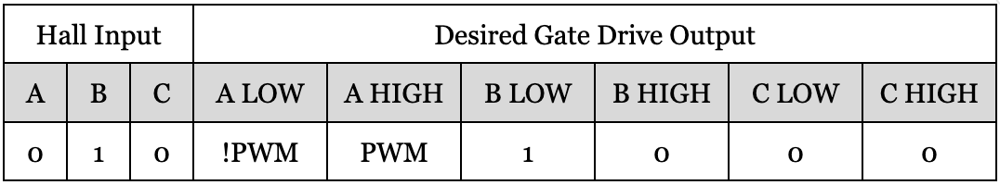
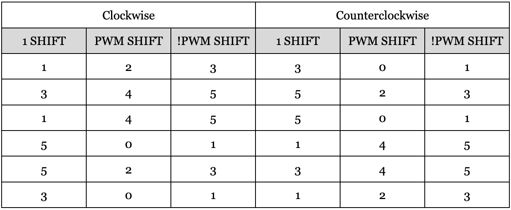
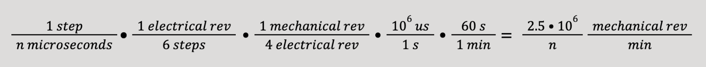
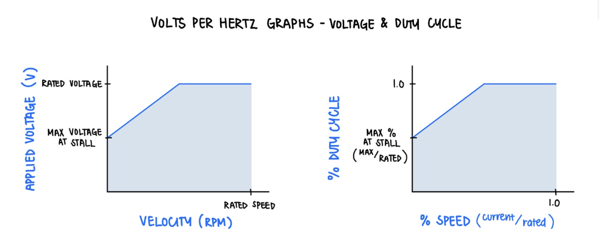

3. Software Design
3.1 Overall Software Design
At the software level, our design consists of the following major components:
- Closed loop speed control via a V/Hz speed controller, which takes user throttle input from the serial terminal.
- Gate drive PIO state machine to output updated control values to the gate drivers for each MOSFET, updated according to proper step in the commutation table.
- PWM PIO state machine to generate the PWM signal for the motor, with a duty cycle updated based on the throttle input.
Our implementation also consists of a current sensing thread, which while not functional in our final design based on a hardware bug, is designed to determine the current through the windings dependent on the current step in the commutation table.
3.2 Commutation
As stated previously, the hall effect sensors on each phase of the motor are used as input to determine the proper step in commutation, which in turn determines the states of the gate drivers on each side of the half bridges. For ease of reference, we include Figure 4 again below:

Figure 4. Gate drive commutation table.
To determine what “state” we are in, dependent on the hall inputs, we create a three bit state variable with the most significant bit as the ‘A’ input, and the least significant bit as the ‘C’ input. Notably, as the rotor rotates, the state does not increment in order, because the hall effect sensors do not change incrementally as states change. For ease of zero-indexing, we decrement this value by 1. This is achieved in the following line, with a, b, and c being the hall inputs from their corresponding phases:
state = ((a << 2) | (b << 1) | (c)) - 1;
From this state, we determine the proper signals to send to each of the six gate drivers. Similar to our state variable, we create a six-wide bitmask to keep track of the signals sent to each gate drive. The most significant bit is [A LOW], all the way down to [C HIGH], following the order of Figure 4 from left to right. Notably, for each state (from Figure 4), one gate driver is driven high (1), one is driven to the PWM signal (PWM), and one to the inverse of the PWM signal (!PWM). So, we create a separate bitmask corresponding to each signal, and OR them together to get the proper bitmask to send to the gate drives.
We store the positions of the 1, PWM, and !PWM in a shift array, which determines how far to shift the signal of interest so that it is being sent to the proper gate drive. As an example for clarity, assume the halls are read as follows (assuming clockwise rotation), with the corresponding desired gate drive output:
Figure 12. Example commutation.
In this state, the desired output to the gate drives is 0b[!PWM][PWM][1][0][0][0], which can be generated by OR’ing three bit masks:
- 0b[0][0][1][0][0][0] → 1 shifted left 3
- 0b[0][PWM][0][0][0][0] → PWM shifted left 4
- 0b[!PWM][0][0][0][0][0] → !PWM shifted left 5
So, this states entry in our shift table would be {3, 4, 5}, corresponding to the proper number of shifts for each signal in order to get the desired output. This masking is done in the following line:
uint32_t data = 0b000000 |
(1 << shift[dir][state][0]) |
(pwm << shift[dir][state][1]) |
(!pwm << shift[dir][state][2]);
This bitmask approach is used, as opposed to a direct-lookup, because the PWM signal is always changing, which would overly complicate a bitmask lookup table. The logic behind when this value is updated and where it gets sent is described in the following sections. The lookup table is unique to each direction. Overall, our approach optimizes the computation time to update controls: each update is associated with the cost of 5 shifts, 5 OR’s, and 1 integer subtraction.
Figure 13. Lookup Table for Bitmask
The logic for commutation is implemented in the update_control() function, which accordingly inputs the state and PWM values to the gate driver PIO machine.The PWM signal is determined by reading the state of the GPIO pin which is driven by the PWM PIO state machine.
The function is called by several triggers. It is imperative for the controls to be updated nearly instantaneously upon a change in outputs. The primary update occurs when the position of the rotor changes, so within a GPIO-driven interrupt for the rising or falling edges of the hall effect sensor values, the state value is updated and the update_control() function is called. Secondly, the control must be updated for the rising and falling edges of the PWM signal. Using a second PIO state machine, a PWM algorithm is implemented such that a PIO-driven interrupt is triggered upon the rising or falling edge of the PWM signal, in which routine the update_control() function is called.
Beyond the commutation described above, the nature of the deadtime is also implemented such that there is only deadtime applied to phases which switch between conducting through the high side MOSFET and conducting through the low side MOSFET. Phases which begin or end the transition with a tristated MOSFET do not require this deadtime. Therefore, the only half bridge to which deadtime is introduced is the phase to which PWM is applied. Overall, deadtime considerations are only applicable to PWM switching, because in the switching to change states in the commutation table, there are no transitions from Vbus to ground or vice versa.
At any point during a single commutation step, there are three gates driven LOW: The two associated with the tristated phase, and the high side gate associated with the phase pulled to ground. Deadtime must be introduced to the remaining phase, which is the phase applying PWM. Whether the PWM is switching from low to high or vice versa, the two gate drive signals associated with this phase should be configured to low for the duration of the deadtime. We notice that during deadtime, there will be five gate drive signals driven low, and the only signal which remains high is the low-side gate drive for the phase driven to ground. Therefore, for the duration of the deadtime, we apply the signal:
uint32_t deadtime = 0b000000 | (1 << shift[dir][state][0]);
In the example commutation described in Figure 12, this would produce the output of all zeros except for the low-side gate of the phase driven to ground.
0b[0][0][1][0][0][0]
Overall, the CPU handles the commutation in a four-step process:
- A change in controls is detected either from a GPIO-driven interrupt or a PIO-driven interrupt.
- The rotor and PWM states are updated.
- A deadtime 6-bit value is sent to the gate drive PIO state machine to introduce deadtime to the switching phase.
- An updated 6-bit value is sent to the gate drive PIO state machine to update the controls.
3.3 Gate Drive PIO State Machine
We offload the gate drive signal generation to a PIO state machine in order to reduce CPU usage and for the most precise timing guarantees. Specifically, we need precise deadtime functionality to the nanosecond scale. If the deadtime period is too short, there will be shoot-through from Vbus to ground; if the deadtime period is too long, the system’s power consumption is amplified by the increase in switching time. Therefore, we experimentally determine an appropriate switching time and the associated deadtime, then we offload this delay to the PIO state machine.
The instructions for the state machine are simple. The state machine idles until a value is detected in the TX FIFO. This first value will always be the deadtime states of the gate drivers. The state machine outputs this control to the pins, and idles for the appropriate deadtime, before pulling the next value detected in the TX FIFO. This will be the new control value, which is outputted to the pins. The pins will then idle in this state until a new deadtime value is detected in the TX FIFO, upon which the process will repeat.
3.4 PWM PIO State Machine
We offload PWM signal generation to a PIO state machine in order to reduce CPU time usage. We developed our PWM PIO state machine off of the RP2040 Datasheet example code, where PWM is shown as a use case for PIO. Similar to the usual PWM use case, we set a wrap value (255), and each period we pull from the FIFO (if it's available) for a new duty cycle. The PWM pin is initially side set to zero, and then the state machine counts down from the wrap value until it hits the value obtained from the FIFO, where the PWM pin is then set high. It continues to count down until it hits zero, and then pulls another duty cycle and restarts the process.
We also incorporated an interrupt service routine into our PWM PIO state machine in order to meet the control requirements of the motor. On both the rising and the falling edge of the PWM signal, we need to update our gate drive control. This is achieved by triggering a PIO interrupt (here irq0) when we set the pin high or low, corresponding with the rising or falling edges of the PWM signal.
irq 0 side 0 // High to low
…
irq 0 side 1 // Low to high
In this ISR, we simply clear the flag and update our controls accordingly.
Before we were able to successfully implement the logic described above, we attempted to minimize CPU computation further by a different method. By using two different IRQs to indicate whether the PWM signal was at a rising or falling edge, we could compute the updated control with less computation than reading the state from the GPIO pin to which the signal is driven. We had attempted to associate IRQ 0 with a falling edge and IRQ 1 with a rising edge. However, this algorithm created many bugs. When the motor was driven at low speeds, the PWM was improperly applied such that there was a nonzero velocity at zero throttle. The bug was amplified when we included print statements to be read through the serial monitor. After unsuccessfully debugging this, we decided to use the implementation described above, which resulted in none of the bugs associated with the dual IRQ method.
3.5 Velocity Feedback
In order to best determine the current velocity of the motor, the velocity is updated upon a GPIO-driven interrupt. The interrupt service routine is triggered upon a rising or falling edge on one of the GPIO pins configured as an input pin for the hall effect sensors. Note that during transitions between states, only one hall effect sensor is toggled, so there is no need for debouncing. Each transition represents a step in the commutation table—i.e. one sixth of an electrical revolution. Because our motor has four pole-pairs, there are six electrical revolutions in each rotor revolution. Therefore, in order to determine the velocity of the motor in revolutions per minute (RPM), we divide the change in position (1/24 revolution) by the change in time, which is the difference between the current time and the last time that a GPIO-driven interrupt was triggered. We then multiply by several factors to convert from microseconds to minutes.

float raw_rpm = 2.5e6f / step_period;
Although this updates our velocity most accurately at the highest frequency, this method does not work as the motor stops rotating, because the hall effect sensors will stop updating. Therefore, in order to measure the velocity accurately as the speed approaches zero, a timer-driven interrupt is introduced. After each GPIO-driven interrupt, the existing timer is cancelled and a new timer is scheduled to occur in 100 ms. This will enforce that the velocity is updated at a frequency of at least 10 Hz. In the timer-driven interrupt, a similar algorithm to that of the GPIO-driven interrupt is applied, where the velocity in RPM is updated as if triggered by a step in the commutation table. Once the algorithm is applied, another timer schedules the next interrupt. The significant difference between the two interrupts is that the last step time is not updated in the timer-driven interrupt, reflecting that the update occurs simply to allow the velocity to asymptotically approach zero. Finally, if the computed velocity is below the threshold of 25 RPM, it is rounded down to zero.
In each interrupt, the computed velocity is also filtered with the following algorithm, where TAU = 106 us is the time constant. This attenuates high-frequency noise with a
1-second time constant, creating a first-order low-pass filter that reduces measurement noise while maintaining responsiveness to actual velocity changes.
float alpha = timer_period / (TAU + timer_period);
motor_rpm = alpha * raw_rpm + (1.0f - alpha) * motor_rpm;
3.6 V/Hz Speed Controller
The Volts per Hertz (V/Hz) controller calculates a maximum duty cycle that increases linearly with the current speed measurement, and applies a voltage boost for lower speeds. The result of this control is that a constant flux through the motor windings is maintained.
Figure 14. V/Hz graphs for voltage and duty cycle.
The blue line represents the maximum voltage, or duty cycle, that can be applied as a function of the speed. The slope of the linearly increasing portion of the graph is the rated voltage divided by the rated speed. The user-inputted throttle value is then used as a percentage of the maximum duty cycle to be applied to the motor. For the best performance, this algorithm is applied whenever the velocity is updated (in the GPIO-driven and timer-driven interrupt service routines).
3.7 User Input
User input is taken via the serial terminal. A user can enter a number from -1.0 to 1.0 to change the throttling of the motor. Positive throttle indicates clockwise rotation of the motor, and “Negative” throttle indicates counterclockwise rotation, with a magnitude of 1.0 indicating full throttle in either direction. We used the protothread for serial input from Lab 3, which spawns a sub thread in order to perform a non-blocking serial read operation. We store the user input in a temporary variable throttle_, and update the rotation direction based on the sign of this variable, and then feed the absolute value of this (throttle) into the speed controller.
3.8 Current Sense
Because current sensing is a lower-priority routine than the commutation described above, it is implemented in a protothread. As described in section 2.1, appropriate selection of the current sensor must be implemented in order to obtain an accurate sensor reading. This is implemented with a series of conditional statements that select the appropriate ADC from which the signal should be read. The ADC corresponding with the phase driven to ground is selected. The ADC value is then read, and converted to the corresponding current value using a conversion factor, as calculated below.
adc_to_current = (LOGIC_LEVEL) / (ADC_MAX * INA_GAIN * SHUNT_RESISTANCE)
adc_to_current = (3.3) / (4095 • 20 • 0.025)
adc_to_current = 0.0016117216